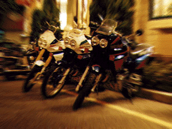
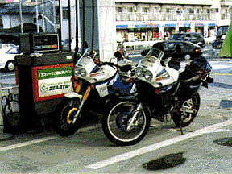
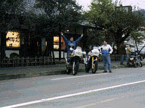
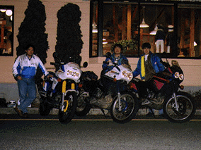

第１回テネレミーティングを1996/11/4に行った。10valvesのXTZオールキャストが、なんと瑞穂町のびっくりドンキーに集結。そのてんまつは如何に？1996年11月4日、昼12時前。厚木インター出口のDマイマート（酒屋さん）でZ002松下さんと待ち合わせ。全然関係ないが、新鮮市場というディスカウントの生鮮食品屋が出来ていた。卵がばら売りしていて1個\16-、今度買いに来よう。高架にオフロードバイクらしいヘルメットが見えた。あれが松下さんか？実はZ002松下さんにもZ003綿貫さんにも一度も逢ったことはない。暫くしても降りてこない。どうやら違うらしい。暫くしてテネレがやってきた。Z002松下さんはオフロードヘルメットを被っていた。いつも乗っているテネレも走っているところを見るのは珍しい。見れば見るほど結構大きいバイクだ。Z002松下さんは10valvesのホームページで見たとおりZ001岸本と似た体格の方だった。テネレの方はというと、サイドカバーやカウルが新品なので確かに新車だ。2台並べて比べてみた。Z002松下さんのは'89、Z001岸本のは'93である。Z002松下さんの話ではSuper Tenereは'89が最初らしい。さすがに殆ど同じ。よくよく見てみると、タンデムステップの高さが'89の方が高い。グリップのSWが左右ともに新しい方が良くなっている。サイドスタンドを立てたときの傾きが微妙に違う。Z001岸本の方が傾きが大きいのである。実はセンタースタンドがないので荷物を載せるときにやりにくいのである。それなりに細かい差があるのだなぁ。
厚木に美味しいチャンポンの店ばってんに行ったらなんとお休みだった。残念だが諦めて平塚のレッドバロンに行った。工場長の上杉さんは風邪を引いたらしくお休みであった。660Tenereが1台商談中エリアに置いて有った。一応店長の高尾さんに10valvesの宣伝をして、大盛りで有名な札幌ラーメンコアラ--変な名前ですね、名物がチャンプル（沖縄名物）というんだからむちゃくちゃ--でZ002松下さんはチャーハン、Z001岸本はマーボーライスを食べた。

1時半位に厚木を出発した。国道129号線を北上したが、橋本五差路がいつものように込んでいたので迂回して16号に入った。そこでガソリンスタンドでZ002松下さんがガソリン補給。まだ160kmしか走っていたのと思ったらなんとマイルメータなので256km。そして八王子バイパスに入った。通行料はツーリングマップ1990年版と同じ\250-だった。それが普通車料金だ！カマロもバイクもおんなじ。5分もしたら終点、噂どおりのあっけなさだった。横田基地の脇までたどり着いた。ちょっと寄り道してみたら殆ど渋谷原宿の乗りの店がある。観光地みたいだった。そこのバイク屋にひっそりとTRXが1台展示して有った。
青梅にたどり着いたのが15:40位。待ち合わせの17:00までまだ時間があったので奥多摩の紅梅苑という和菓子屋さんに行った。ここは昔から有名なところで、小学生の頃家族で御嶽山に行った帰りに寄ったものだ。17:00閉店なのでさすがに商品の残りが少ない。お饅頭を買った。16:30に紅梅苑をあとにして待ち合わせの青梅街道と16号線瑞穂バイパスの交差点にあるびっくりドンキーに向かった。道は混み混みだった。紅葉狩り（何で狩りというの？誰か教えて）の帰りの車かとても込んでいてドンキー手前50m位で動けずにいたら携帯がなった。Z003綿貫さんだろうか？謎はつきないけれど電話に出てる場合でない、誰だか気になりながら保留すること2回。

Nov/7/96